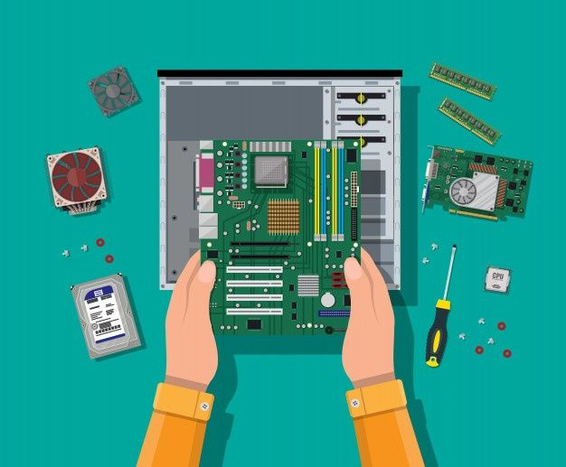

BudgetPC and console gamers both want the most bang for their buck, but what that looks like and how it's measured is different for each group. For a console gamer, costs are generally limited to purchasing the console, extra controllers, games, and perhaps online multiplayer passes. For a PC gamer, there's a wide variety of options to buy if you choose to build your own computer, but not every PC gamer has their own custom-built machine. Because there's such a wide variety of possibilities and differences in perceived value, it's impossible to say either PCs or consoles are more cost-efficient. It completely depends on the individual. The level of customization and performance you're looking for determines the size your budget needs to be to get the platform you want. |

|
|---|
Technical SkillsGenerally, PC gamers need to have more technical skills than console gamers. Although it is possible to modify a console by adding new hardware, it's not necessary. Console gamers do need to be able to install the sequel or update of their games. PC gamers need at least a minimal level of technical skills, even if they purchased a pre-built gaming computer. And by technical skills, we don't mean the ability to write HTML code, but the ability to set up a computer with a general concept of how it operates. A PC gamer might also want to upgrade hardware components and install new drivers for those components, which calls for an intermediate skill level. |
|---|
UpgradesOne of the most significant advantages of a PC is its modularity. You can switch out any component or add more of what you need, when you need!performance? No problem! All you need to do is swap out your current graphics card for a brand-new one (assuming power requirements are similar; if not, a power supply upgrade is just a swap away), and that's it. You get to enjoy a new tier of performance with minimal effort Storage is also always a concern with modern game sizes going through the roof lately. But if you have access to a PC, you can add more when you need space for that shiny new game you want to play next.Being forced to delete older games that you still might want to play is a painful endeavor that you probably hate already. A PC can help you skip this pain altogether. |
 |
|---|
Popularity Rankings
| Name | Popularity | Total Users |
|---|---|---|
| Personal Computer | I | 1.83 billion |
| Play Station | II | 563.2 million |
| Nintendo | III | 116 million |